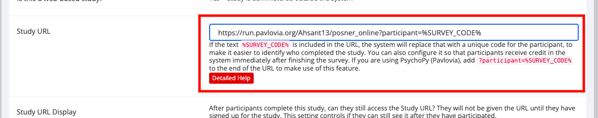

Chapter 6 Recruitment: recruiting participants and collecting data online
6.1 Recruiting from SONA: Undergraduate Research Participant Pool URPP
We have set up all our websites separtely, now we will link all of them together using query strings. Query strings allow us to transfer Participant ID from one website to another.
6.1.1 URPP –> Qualtrics –> Pavlovia –> URPP: Automatic Process
Below are the steps required at each website to link everything together.
URPP:
- Create a new study in URPP
- Under ’Study URL: paste Qualtrics survey link ending in ?id=%SURVEY_CODE%. This will pass the URPP code to Qualtrics through the variable id.
Figure 6.1: URL ending, URPP
Qualtrics:
- Go onto URPP code, right click to open options and select default choices
- Add a new embedded data element, type in id as a variable and click insert. This will allow Qualtrics to recongize the Participant’s ID as the variable id.
Figure 6.2: embedded data field, Qualtrics
- Go to end of the survey, and add ?participant=${e://Field/id} at end of the URL of your experiment. This will rename the SONA and Qualtrics participant ID from ‘id’ to ‘participant’ so Pavlovia can recognize it.
Figure 6.3: URL ending, Qualtrics
URPP:
- Go to study page and copy the link under ‘Qualtrics Redirect to a URL’.
- Return to PsychoPy, and click on Experimenter Settings –> Online tab
- In ‘Completed URL’ enter the URPP link and change ${e://Field/id} with “+expInfo[‘participant’]” This changes the participant ID variable from ‘participant’ back to ‘id’ so URPP can recognize it and give credit to the participant.
- Don’t forget to push the changes from PsychoPy to Pavlovia!
Figure 6.4: URL ending, PsychoPy
6.1.2 URPP –> Pavlovia –> URPP: Automatic Process
URPP:
- Create a new study in URPP
- Under ‘Study URL: paste Pavlovia study URL ending in ?participant=%SURVEY_CODE%. This will pass the URPP code to Pavlovia through the variable ’participant’.
- Go to study page and copy the URPP completeion URL

Figure 6.5: URL ending, PsychoPy
PsychoPy:
- Click on Experimenter Settings on PsychoPy –> Online tab
- Paste the URPP completion URL and add “+expInfo[‘participant’]” to end of it. This allows URPP and PsychoPy to communicate the participant ID through the variable ‘participant’
- Don’t forget to push the changes from PsychoPy to Pavlovia!
Figure 6.6: URL ending, PsychoPy
6.2 Recruiting from Prolific
6.2.1 Prolific –> Qualtrics –> Pavlovia –> Prolific: Automatic Process
Prolific:
- Create a new study in Prolific
- Under ‘What is the URL of your study?’: paste Qualtrics survey link and click on ‘I’ll use URL parameters’. which will add the parameters to the end of the Qualtrics URL automatically.
- Click on ‘Configure parameters’ and change PROLIFIC PID –> participant, STUDY ID –> study_id, and SESSION ID –> session, respectively. This will translate the default prolific variable names to those used in Qualtrics and PsychoPy.
Figure 6.7: URL ending, Prolific
Qualtrics:
- Go onto Prolific code section, right click to open options and select default choices
- Add a new embedded data element, type in ‘participant’ as a variable and click insert. This will allow Qualtrics to recongize the Participant’s ID as the variable ‘participant’.
Figure 6.8: embedded data field, Qualtrics
- Go to end of the survey, select ‘Redirect to URL’ and add ?participant=${e://Field/participant} at end of the Pavlovia URL of your experiment.
Figure 6.9: URL ending, Qualtrics
Prolific:
- Go back to your study on Prolific, under ‘Study completion’ click on the option ‘I’ll redirect them using a URL’ and copy the link below.
- Return to PsychoPy, and click on Experimenter Settings –> Online tab
- In ‘Completed URL’ enter the Prolific completion link and push your changes to Pavlovia!
Figure 6.10: Study Completion, PsychoPy